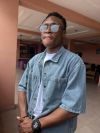

Dickson David | WDD 130

Hello! Welcome to my page, I am David Dickson an Aspiring Programmer. I enjoy reading and solving real life problems, I am a Taekwondo Athlete i love to train my mind and spirit, I am an optimist. However QuantumTradeTech is my Tech Company's name. Theres a lot to know about me just stick around!